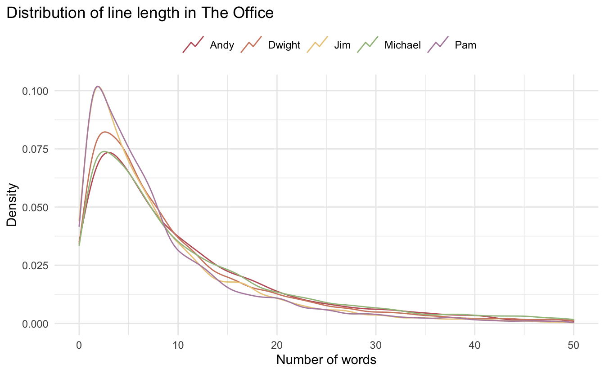
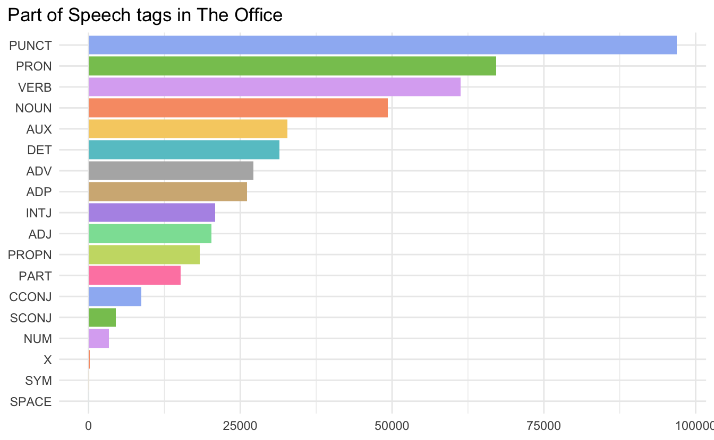
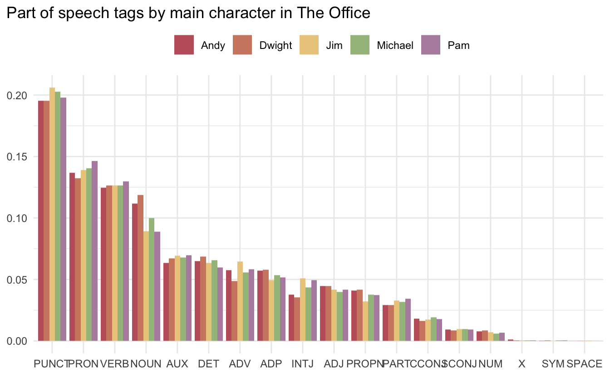
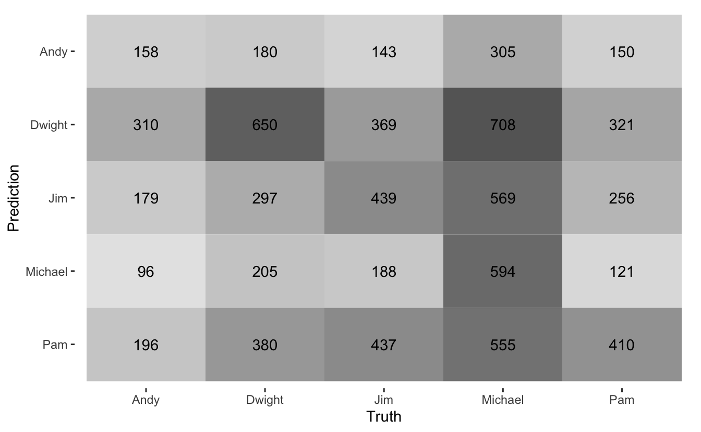

This post was written before the change to textrecipes to support spacyr as an engine to step_tokenize(). It is still a good demonstration of how to use a custom tokenizer.
I’m ready for my second #tidytuesday and as a massive The Office fan this dataset is right up my alley. In this post, you will read how to
- Use the R wrapper spacyr of spacy to extract part of speech tags
- Use a custom tokenizer in conjunction with textrecipes package
- Do hyperparameter tuning with the tune package
- Try to predict the author of each line in the show
I’ll put a little more effort into the explorative charts than I usually do. I’ll not be explaining each line of code for those, but you are encouraged to play around with them yourself.
Packages 📦
library(schrute)
library(tidytext)
library(tidymodels)
library(tidyr)
library(tokenizers)
library(textrecipes)
library(spacyr)
library(paletteer)We will be using the schrute package which includes the dataset for the week. tidytext and tokenizers to do data exploration for the text. spacyr to access the spacy to perform part of speech tagging. tidymodels and textrecipes to do the preprocessing and modeling. And lastly, we use paletteer to get pretty color palettes.
Exploring the data ⛏
The data comes with a lot of different variables. We will be focusing on character and text which contains the character and what they said, in English1. First, let us take a look at how many lines each character has
theoffice %>%
count(character, sort = TRUE)
## # A tibble: 773 x 2
## character n
## <chr> <int>
## 1 Michael 10921
## 2 Dwight 6847
## 3 Jim 6303
## 4 Pam 5031
## 5 Andy 3754
## 6 Angela 1569
## 7 Kevin 1564
## 8 Erin 1440
## 9 Oscar 1368
## 10 Ryan 1198
## # … with 763 more rowsMicheal, Dwight, Jim, and Pam are dominating the charts. This is unsurprising since they are some of the main characters having a central role in the episodes they appear in. This will be too many classes for the scope of this post so I’ll limit it to the top 5 characters with the most lines since the number drops off more after the first 5.
small_office <- theoffice %>%
select(character, text) %>%
filter(character %in% c("Michael", "Dwight", "Jim", "Pam", "Andy"))Let us take a lot at how many words each line in the script is. This is going to be a problem for us later on as predicting with shorter text is harder than longer text as there is less information in it.
small_office %>%
mutate(n_words = count_words(text)) %>%
ggplot(aes(n_words, color = character)) +
geom_density(binwidth = 1, key_glyph = draw_key_timeseries) +
xlim(c(0, 50)) +
scale_color_paletteer_d("nord::aurora") +
labs(x = "Number of words", y = "Density", color = NULL,
title = "Distribution of line length in The Office") +
theme_minimal() +
theme(legend.position = "top",
plot.title.position = "plot") 
These lines are thankfully pretty similar, which will make it easier for us to make a good predictive model. However, we can still see some differences. Pam and Jim both have shorter lines than the rest, and Michael and Andy both have fewer shorter lines in exchange for more long lines.
We will be also be exploring part of speech tagging and for that, we will be using the spacyr package. It isn’t always needed but I’m going to explicitly initialize the spacy model
spacy_initialize(model = "en_core_web_sm")the spacyr package outputs in this nice format with doc_id, sentence_id, token_id, token and pos.
spacy_parse(small_office$text[1], entity = FALSE, lemma = FALSE)
## doc_id sentence_id token_id token pos
## 1 text1 1 1 All ADV
## 2 text1 1 2 right ADV
## 3 text1 1 3 Jim PROPN
## 4 text1 1 4 . PUNCT
## 5 text1 2 1 Your PRON
## 6 text1 2 2 quarterlies NOUN
## 7 text1 2 3 look VERB
## 8 text1 2 4 very ADV
## 9 text1 2 5 good ADJ
## 10 text1 2 6 . PUNCT
## 11 text1 3 1 How ADV
## 12 text1 3 2 are AUX
## 13 text1 3 3 things NOUN
## 14 text1 3 4 at ADP
## 15 text1 3 5 the DET
## 16 text1 3 6 library NOUN
## 17 text1 3 7 ? PUNCTNormally I would just analyze the data in this format. But since I have to create a custom wrapper for textrecipes anyway I’ll do the remaining of the text mining in tidytext. textrecipes requires that the tokenizer returns the tokens in a list format similar to the tokenizers in tokenizers. The following function takes a character vector and returns the part of speech tags in a list format.
spacy_pos <- function(x) {
tokens <- spacy_parse(x, entity = FALSE, lemma = FALSE)
token_list <- split(tokens$pos, tokens$doc_id)
names(token_list) <- gsub("text", "", names(token_list))
res <- unname(token_list[as.character(seq_along(x))])
empty <- lengths(res) == 0
res[empty] <- lapply(seq_len(sum(empty)), function(x) character(0))
res
}Little example to showcase the function
example_string <- c("Hello there pig", "", "One more pig here")
spacy_pos(x = example_string)
## [[1]]
## [1] "INTJ" "ADV" "NOUN"
##
## [[2]]
## character(0)
##
## [[3]]
## [1] "NUM" "ADJ" "NOUN" "ADV"We can use a custom tokenizer by simply passing it to the token argument. This is going to take a little longer than normal since POS tagging takes longer than simply tokenizing.
small_office_tokens <- small_office %>%
unnest_tokens(text, text, token = spacy_pos, to_lower = FALSE)Below is a chart of the number of each part of speech tags. The meaning of the acronyms can be found here if you click on the Universal Part-of-speech Tags button.
colors <- rep(paletteer_d("rcartocolor::Pastel"), length.out = 18)
small_office_tokens %>%
count(text) %>%
ggplot(aes(n, reorder(text, n), fill = reorder(text, n))) +
geom_col() +
labs(x = NULL, y = NULL, title = "Part of Speech tags in The Office") +
scale_fill_manual(values = colors) +
guides(fill = "none") +
theme_minimal() +
theme(plot.title.position = "plot") 
I found it initially surprising that punctuation (PUNCT) was leading the chart. But after thinking about it a little bit, I can imagine it has something to do with all the lines being very short and having to end in some kind of punctuation.
We can facet this by the character to see who uses what part of speech.
small_office_tokens %>%
count(character, text) %>%
group_by(character) %>%
mutate(prop = n / sum(n)) %>%
ungroup() %>%
ggplot(aes(forcats::fct_rev(reorder(text, n)), prop, fill = character)) +
geom_col(position = "dodge") +
scale_fill_paletteer_d("nord::aurora") +
labs(x = NULL, y = NULL, fill = NULL,
title = "Part of speech tags by main character in The Office") +
theme_minimal() +
theme(legend.position = "top",
plot.title.position = "plot") 
I don’t immediately see anything popping out at me, but it is a very pretty chart otherwise. I feel like I have seen enough, lets get to modeling!
Modeling ⚙️
Not that we have gotten a look at the data let’s get to modeling. First, we need to do a test/train split which we can do with yardstick.
set.seed(1234)
office_split <- initial_split(small_office, strata = character)
office_test <- testing(office_split)
office_train <- training(office_split)Next, we are going to prepare the preprocessing steps. We will be using the custom part of speech tokenizer we defined earlier to include part of speech tag counts as features in our model. Since this data is going to be a little sparse will we also include bi-grams of the data. To this, we first create a copy of the text variable and apply the tokenizers to each copy. Lastly will be also be doing some downsampling of the data to handle the imbalance in the data. This calculation will once again take a little while since the part of speech calculations takes a minute or two.
rec <- recipe(character ~ text, data = small_office) %>%
# Deal with imbalance
step_downsample(character) %>%
# Create copy of text variable
step_mutate(text_copy = text) %>%
# Tokenize the two text columns
step_tokenize(text, token = "ngrams", options = list(n = 2)) %>%
step_tokenize(text_copy, custom_token = spacy_pos) %>%
# Filter to only keep the most 100 frequent n-grams
step_tokenfilter(text, max_tokens = 100) %>%
# Calculate tf-idf for both sets of tokens
step_tfidf(text, text_copy) %>%
prep()
## Warning: `step_downsample()` was deprecated in recipes 0.1.13.
## Please use `themis::step_downsample()` instead.
## Found 'spacy_condaenv'. spacyr will use this environment
## successfully initialized (spaCy Version: 3.0.5, language model: en_core_web_sm)
## (python options: type = "condaenv", value = "spacy_condaenv")We can now extract the processed data
office_test_prepped <- bake(rec, office_test)
office_train_prepped <- juice(rec)To do the actual modeling we will be using multinom_reg() with "glmnet" as the engine. This model has two hyperparameters, which we will be doing a grid search over to find optimal values. We specify that we want to tune these parameters by passing tune() to them.
tune_spec <- multinom_reg(penalty = tune(), mixture = tune()) %>%
set_engine("glmnet")
tune_spec
## Multinomial Regression Model Specification (classification)
##
## Main Arguments:
## penalty = tune()
## mixture = tune()
##
## Computational engine: glmnetNext, we set up a bootstrap sampler and grid to optimize over.
set.seed(12345)
office_boot <- bootstraps(office_train_prepped, strata = character, times = 10)
hyper_grid <- grid_regular(penalty(), mixture(), levels = 10)We are experiencing a little bit of data leakage since we don’t perform the preprocessing within each bootstrap.
Now we pass all the objects to tune_grid(). It is also possible to combine our recipe and model object into a workflow object to pass to tune_grid instead. However, since the preprocessing step took so long and we didn’t vary anything it makes more sense time-wise to use tune_grid() with a formula instead. I also set control = control_grid(verbose = TRUE) so I get a live update of how far the calculations are going.
set.seed(123456)
fitted_grid <- tune_grid(
object = tune_spec,
preprocessor = character ~ .,
resamples = office_boot,
grid = hyper_grid,
control = control_grid(verbose = TRUE)
)We can now look at the best performing models with show_best()
fitted_grid %>%
show_best("roc_auc")
## # A tibble: 5 x 8
## penalty mixture .metric .estimator mean n std_err .config
## <dbl> <dbl> <chr> <chr> <dbl> <int> <dbl> <chr>
## 1 0.00599 0.667 roc_auc hand_till 0.575 10 0.00105 Preprocessor1_Model068
## 2 0.00599 0.778 roc_auc hand_till 0.575 10 0.00102 Preprocessor1_Model078
## 3 0.00599 0.556 roc_auc hand_till 0.575 10 0.00105 Preprocessor1_Model058
## 4 0.00599 0.889 roc_auc hand_till 0.575 10 0.00102 Preprocessor1_Model088
## 5 0.00599 0.444 roc_auc hand_till 0.575 10 0.000918 Preprocessor1_Model048And we can use the values from the best performing model to fit our final model.
final_model <- tune_spec %>%
update(penalty = 0.005994843, mixture = 1 / 3) %>%
fit(character ~ ., data = office_train_prepped)Evaluation 📐
Now that we have our final model we can predict on our test set and look at the confusion matrix to see how well we did.
bind_cols(
predict(final_model, office_test_prepped),
office_test_prepped
) %>%
conf_mat(truth = character, estimate = .pred_class) %>%
autoplot(type = "heatmap")
These are not going too well. It is doing best at predicting Michael correctly, and it seems to confuse Dwight and Michael a little bit.
Let us investigate the cases that didn’t go too well. We can get the individual class probabilities by setting type = "prob" in predict()
class_predictions <- predict(final_model, office_test_prepped, type = "prob")
class_predictions
## # A tibble: 8,216 x 5
## .pred_Andy .pred_Dwight .pred_Jim .pred_Michael .pred_Pam
## <dbl> <dbl> <dbl> <dbl> <dbl>
## 1 0.236 0.160 0.240 0.250 0.114
## 2 0.206 0.285 0.176 0.173 0.159
## 3 0.227 0.183 0.181 0.257 0.151
## 4 0.183 0.218 0.182 0.205 0.212
## 5 0.159 0.118 0.233 0.207 0.283
## 6 0.249 0.206 0.181 0.175 0.189
## 7 0.223 0.223 0.164 0.198 0.191
## 8 0.224 0.242 0.186 0.177 0.172
## 9 0.222 0.214 0.209 0.188 0.167
## 10 0.234 0.233 0.197 0.187 0.149
## # … with 8,206 more rowsWe can do some wrangling to get the 5 worst predicted texts for each character:
bind_cols(
class_predictions,
office_test
) %>%
pivot_longer(starts_with(".pred_")) %>%
filter(gsub(".pred_", "", name) == character) %>%
group_by(character) %>%
arrange(value) %>%
slice(1:5) %>%
ungroup() %>%
select(-name, -value) %>%
reactable::reactable()So the first striking thing here is that many of the lines are quite short, with most of Pam’s being 5 words or less. On the other hand, all the wrongly predicted lines for Michael are quite a bit longer than the rest.
We can also get the best predicted lines for each character by flipping the sign with desc()
bind_cols(
class_predictions,
office_test
) %>%
pivot_longer(starts_with(".pred_")) %>%
filter(gsub(".pred_", "", name) == character) %>%
group_by(character) %>%
arrange(desc(value)) %>%
slice(1:5) %>%
ungroup() %>%
select(-name, -value) %>%
reactable::reactable()One thing I noticed is that many of Pam’s lines start with “Oh my” and that might have been a unique character trait that got picked up in the bi-grams.
session information
─ Session info ───────────────────────────────────────────────────────────────
setting value
version R version 4.1.0 (2021-05-18)
os macOS Big Sur 10.16
system x86_64, darwin17.0
ui X11
language (EN)
collate en_US.UTF-8
ctype en_US.UTF-8
tz America/Los_Angeles
date 2021-07-16
─ Packages ───────────────────────────────────────────────────────────────────
package * version date lib source
assertthat 0.2.1 2019-03-21 [1] CRAN (R 4.1.0)
backports 1.2.1 2020-12-09 [1] CRAN (R 4.1.0)
blogdown 1.3.2 2021-06-09 [1] Github (rstudio/blogdown@00a2090)
bookdown 0.22 2021-04-22 [1] CRAN (R 4.1.0)
broom * 0.7.8 2021-06-24 [1] CRAN (R 4.1.0)
bslib 0.2.5.1 2021-05-18 [1] CRAN (R 4.1.0)
class 7.3-19 2021-05-03 [1] CRAN (R 4.1.0)
cli 3.0.0 2021-06-30 [1] CRAN (R 4.1.0)
clipr 0.7.1 2020-10-08 [1] CRAN (R 4.1.0)
codetools 0.2-18 2020-11-04 [1] CRAN (R 4.1.0)
colorspace 2.0-2 2021-06-24 [1] CRAN (R 4.1.0)
crayon 1.4.1 2021-02-08 [1] CRAN (R 4.1.0)
crosstalk 1.1.1 2021-01-12 [1] CRAN (R 4.1.0)
data.table 1.14.0 2021-02-21 [1] CRAN (R 4.1.0)
DBI 1.1.1 2021-01-15 [1] CRAN (R 4.1.0)
desc 1.3.0 2021-03-05 [1] CRAN (R 4.1.0)
details * 0.2.1 2020-01-12 [1] CRAN (R 4.1.0)
dials * 0.0.9 2020-09-16 [1] CRAN (R 4.1.0)
DiceDesign 1.9 2021-02-13 [1] CRAN (R 4.1.0)
digest 0.6.27 2020-10-24 [1] CRAN (R 4.1.0)
dplyr * 1.0.7 2021-06-18 [1] CRAN (R 4.1.0)
ellipsis 0.3.2 2021-04-29 [1] CRAN (R 4.1.0)
emo 0.0.0.9000 2021-07-17 [1] Github (hadley/emo@3f03b11)
evaluate 0.14 2019-05-28 [1] CRAN (R 4.1.0)
fansi 0.5.0 2021-05-25 [1] CRAN (R 4.1.0)
farver 2.1.0 2021-02-28 [1] CRAN (R 4.1.0)
foreach 1.5.1 2020-10-15 [1] CRAN (R 4.1.0)
furrr 0.2.3 2021-06-25 [1] CRAN (R 4.1.0)
future 1.21.0 2020-12-10 [1] CRAN (R 4.1.0)
generics 0.1.0 2020-10-31 [1] CRAN (R 4.1.0)
ggplot2 * 3.3.5 2021-06-25 [1] CRAN (R 4.1.0)
glmnet * 4.1-2 2021-06-24 [1] CRAN (R 4.1.0)
globals 0.14.0 2020-11-22 [1] CRAN (R 4.1.0)
glue 1.4.2 2020-08-27 [1] CRAN (R 4.1.0)
gower 0.2.2 2020-06-23 [1] CRAN (R 4.1.0)
GPfit 1.0-8 2019-02-08 [1] CRAN (R 4.1.0)
gtable 0.3.0 2019-03-25 [1] CRAN (R 4.1.0)
hardhat 0.1.5 2020-11-09 [1] CRAN (R 4.1.0)
highr 0.9 2021-04-16 [1] CRAN (R 4.1.0)
htmltools 0.5.1.1 2021-01-22 [1] CRAN (R 4.1.0)
htmlwidgets 1.5.3 2020-12-10 [1] CRAN (R 4.1.0)
httr 1.4.2 2020-07-20 [1] CRAN (R 4.1.0)
infer * 0.5.4 2021-01-13 [1] CRAN (R 4.1.0)
ipred 0.9-11 2021-03-12 [1] CRAN (R 4.1.0)
iterators 1.0.13 2020-10-15 [1] CRAN (R 4.1.0)
janeaustenr 0.1.5 2017-06-10 [1] CRAN (R 4.1.0)
jquerylib 0.1.4 2021-04-26 [1] CRAN (R 4.1.0)
jsonlite 1.7.2 2020-12-09 [1] CRAN (R 4.1.0)
knitr * 1.33 2021-04-24 [1] CRAN (R 4.1.0)
lattice 0.20-44 2021-05-02 [1] CRAN (R 4.1.0)
lava 1.6.9 2021-03-11 [1] CRAN (R 4.1.0)
lhs 1.1.1 2020-10-05 [1] CRAN (R 4.1.0)
lifecycle 1.0.0 2021-02-15 [1] CRAN (R 4.1.0)
listenv 0.8.0 2019-12-05 [1] CRAN (R 4.1.0)
lubridate 1.7.10 2021-02-26 [1] CRAN (R 4.1.0)
magrittr 2.0.1 2020-11-17 [1] CRAN (R 4.1.0)
MASS 7.3-54 2021-05-03 [1] CRAN (R 4.1.0)
Matrix * 1.3-3 2021-05-04 [1] CRAN (R 4.1.0)
modeldata * 0.1.0 2020-10-22 [1] CRAN (R 4.1.0)
munsell 0.5.0 2018-06-12 [1] CRAN (R 4.1.0)
nnet 7.3-16 2021-05-03 [1] CRAN (R 4.1.0)
paletteer * 1.3.0 2021-01-06 [1] CRAN (R 4.1.0)
parallelly 1.26.1 2021-06-30 [1] CRAN (R 4.1.0)
parsnip * 0.1.6 2021-05-27 [1] CRAN (R 4.1.0)
pillar 1.6.1 2021-05-16 [1] CRAN (R 4.1.0)
pkgconfig 2.0.3 2019-09-22 [1] CRAN (R 4.1.0)
plyr 1.8.6 2020-03-03 [1] CRAN (R 4.1.0)
png 0.1-7 2013-12-03 [1] CRAN (R 4.1.0)
pROC 1.17.0.1 2021-01-13 [1] CRAN (R 4.1.0)
prodlim 2019.11.13 2019-11-17 [1] CRAN (R 4.1.0)
purrr * 0.3.4 2020-04-17 [1] CRAN (R 4.1.0)
R6 2.5.0 2020-10-28 [1] CRAN (R 4.1.0)
Rcpp 1.0.7 2021-07-07 [1] CRAN (R 4.1.0)
reactable 0.2.3 2020-10-04 [1] CRAN (R 4.1.0)
reactR 0.4.4 2021-02-22 [1] CRAN (R 4.1.0)
recipes * 0.1.16 2021-04-16 [1] CRAN (R 4.1.0)
rematch2 2.1.2 2020-05-01 [1] CRAN (R 4.1.0)
rlang * 0.4.11 2021-04-30 [1] CRAN (R 4.1.0)
rmarkdown 2.9 2021-06-15 [1] CRAN (R 4.1.0)
rpart 4.1-15 2019-04-12 [1] CRAN (R 4.1.0)
rprojroot 2.0.2 2020-11-15 [1] CRAN (R 4.1.0)
rsample * 0.1.0 2021-05-08 [1] CRAN (R 4.1.0)
rstudioapi 0.13 2020-11-12 [1] CRAN (R 4.1.0)
sass 0.4.0 2021-05-12 [1] CRAN (R 4.1.0)
scales * 1.1.1 2020-05-11 [1] CRAN (R 4.1.0)
schrute * 0.2.2 2020-06-30 [1] CRAN (R 4.1.0)
sessioninfo 1.1.1 2018-11-05 [1] CRAN (R 4.1.0)
shape 1.4.6 2021-05-19 [1] CRAN (R 4.1.0)
SnowballC 0.7.0 2020-04-01 [1] CRAN (R 4.1.0)
spacyr * 1.2.1 2020-03-04 [1] CRAN (R 4.1.0)
stringi 1.6.2 2021-05-17 [1] CRAN (R 4.1.0)
stringr 1.4.0 2019-02-10 [1] CRAN (R 4.1.0)
survival 3.2-11 2021-04-26 [1] CRAN (R 4.1.0)
textrecipes * 0.4.1 2021-07-11 [1] CRAN (R 4.1.0)
tibble * 3.1.2 2021-05-16 [1] CRAN (R 4.1.0)
tidymodels * 0.1.3 2021-04-19 [1] CRAN (R 4.1.0)
tidyr * 1.1.3 2021-03-03 [1] CRAN (R 4.1.0)
tidyselect 1.1.1 2021-04-30 [1] CRAN (R 4.1.0)
tidytext * 0.3.1 2021-04-10 [1] CRAN (R 4.1.0)
timeDate 3043.102 2018-02-21 [1] CRAN (R 4.1.0)
tokenizers * 0.2.1 2018-03-29 [1] CRAN (R 4.1.0)
tune * 0.1.5 2021-04-23 [1] CRAN (R 4.1.0)
utf8 1.2.1 2021-03-12 [1] CRAN (R 4.1.0)
vctrs * 0.3.8 2021-04-29 [1] CRAN (R 4.1.0)
withr 2.4.2 2021-04-18 [1] CRAN (R 4.1.0)
workflows * 0.2.2 2021-03-10 [1] CRAN (R 4.1.0)
workflowsets * 0.0.2 2021-04-16 [1] CRAN (R 4.1.0)
xfun 0.24 2021-06-15 [1] CRAN (R 4.1.0)
xml2 1.3.2 2020-04-23 [1] CRAN (R 4.1.0)
yaml 2.2.1 2020-02-01 [1] CRAN (R 4.1.0)
yardstick * 0.0.8 2021-03-28 [1] CRAN (R 4.1.0)
[1] /Library/Frameworks/R.framework/Versions/4.1/Resources/library